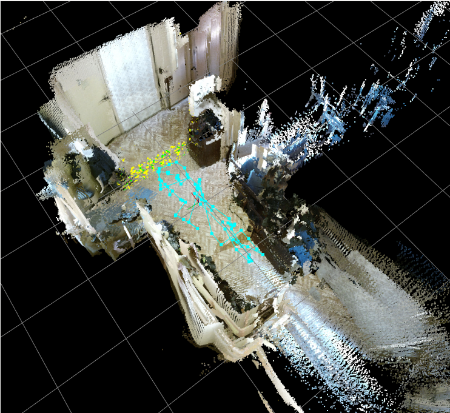
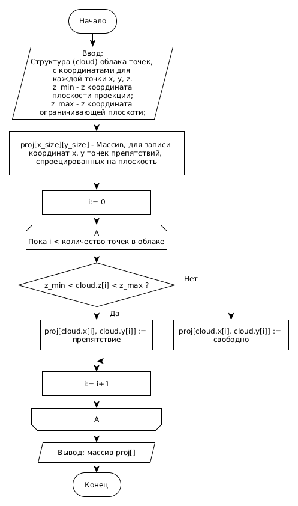
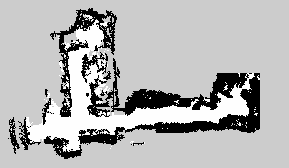

Модель неизвестной среды предполагает следующие допущения:
- среда является статичной;
- нет движущихся объектов кроме самого робота.
Данные, полученные с времепролетной камеры и обработанные с помощью алгоритмов библиотеки RTAB-MAP (выбранной для работы в результате аналитического обзора), представляют собой цветное облако точек в декартовых координатах, которые лежат на поверхности объектов пространства вокруг робота.
Цветное облако точек – это множество точек в трехмерном пространстве, полученных в результате 3D-сканирования объекта реального мира и представляющих поверхность этого объекта. Каждая точка имеет три координаты x, y, z и значение цвета в цветовой модели RGB (Red, Green, Blue).
Максимальное расстояние до объектов, которое может измерять времепролетная камера Microsoft Kinect 2.0, составляет 4,5 м, поэтому запись данных производилась в помещении.
На рисунке 9 представлен вид трехмерной карты, полученной в помещении.

Рисунок 9 – Вид трехмерной карты
Библиотека RTAB-MAP использует в качестве формата выходных данных файловый формат PCD (Point Cloud Data). Этот файл представляет собой данные о цветном облаке точек, записанные в памяти компьютера в определенной последовательности.
Каждый файл PCD содержит заголовок, который идентифицирует и декларирует определенные свойства данных облаков точек, хранящихся в файле. Заголовок файла PCD [14] должен быть закодирован в ASCII (American standard code for information interchange). В заголовке содержатся следующие ключевые слова и переменные:
- VERSION – определяет версию файла PCD;
- FIELDS – определяет имя каждого измерения, например: x y z rgb - координаты точки и её цвет;
- SIZE – определяет размер каждого измерения в байтах;
- TYPE – определяет тип каждого измерения;
- COUNT – определяет, сколько элементов имеет каждое измерение. По умолчанию, если COUNT не определен, счетчик всех размеров устанавливается в единицу;
- WIDTH – определяет ширину облака точек;
- HEIGHT – определяет высоту облака точек;
- VIEWPOINT – определяет точку обзора;
- POINTS – определяет общее количество точек в облаке;
- DATA – определяет тип данных текстовой или двоичный;
Далее в файле следуют непосредственно данные, определяющие координаты и цвет каждой точки.
Пример содержимого файла:
# .PCD v.7 - Point Cloud Data file format
VERSION .7
FIELDS x y z rgb
SIZE 4 4 4 4
TYPE F F F F
COUNT 1 1 1 1
WIDTH 213
HEIGHT 1
VIEWPOINT 0 0 0 1 0 0 0
POINTS 213
DATA ascii
0.93773 0.33763 0 4.2108e+06
0.90805 0.35641 0 4.2108e+06
0.81915 0.32 0 4.2108e+06
0.97192 0.278 0 4.2108e+06
0.944 0.29474 0 4.2108e+06
Для работы с форматом данных PCD используется библиотека PCL (Point Cloud Library). С помощью алгоритмов реализованных RTAB-Map и библиотекой PCL , производится первичная обработка данных на трехмерной карте, включающая в себя уменьшение плотности облака точек. Анализ множества трехмерных точек весьма ресурсоемкая задача. Для ускорения обработки сокращается число точек в облаке, с минимальной потерей информации о сцене.
Используемая модель облака точек позволяет алгоритму SLAM RTAB-Map выполнять локализацию (определять местоположение) робота в пространстве.
Для работы алгоритмов, отвечающих за планирование перемещений робота (см. разделы 3 и 4 данной работы) используется плоское представление окружающей среды. Чтобы получить плоское представление требуется спроецировать облако точек на плоскость.
На рисунке 10 показана общая схема алгоритма перевода 3D карты в 2D представление. Плоскость проекции располагается перпендикулярно оси Z 3D карты на уровне Z = - 0,45 м от положения камеры. На уровне Z = 0,5 м проходит плоскость, ограничивающая срез проецируемого облака точек. Т.е. проецируемый срез облака точек заключён между плоскостью проекции и ограничивающей плоскостью. Все точки находящиеся ниже плоскости проекции, считаются свободным участком. Точки, находящиеся выше плоскости проекции, но ниже ограничивающей плоскости считаются препятствием.
Для дальнейшего использования проекция дискретизируется сеткой, с шагом 0,05 м.
В результате получается сетчатая карта занятости (occupancy grid map), являющяяся 2D графом (см. рисунок 11).

Рисунок 10 - Общая схема алгоритма перевода 3D карты в 2D карту
Сетчатая карта представляет среду как матрицу ячеек, каждая из которых может иметь одно из трех значений:
- препятствие, т.е. робот не может проехать через эту ячейку (на рисунке 11 отмечена черным цветом);
- свободна, где робот может передвигаться (белый цвет);
- неизвестно (серый цвет).
Карта такого типа не может абсолютно точно описывать среду, но при достаточно малом размере ячейки дискретизирующей сетки, она содержит необходимую информацию об окружающем робота пространстве.

Рисунок 11 - 2D граф
В данном разделе описана модель неизвестной среды, и предложено разделить модель на две составляющие.
Первая составляющая модели, представляет собой 3D карту, состоящую из облака точек. Эта часть модели в дальнейшем используется для работы алгоритма SLAM.
Вторая составляющая модели требуется для работы алгоритмов планирования пути и представляет собой 2D карту.